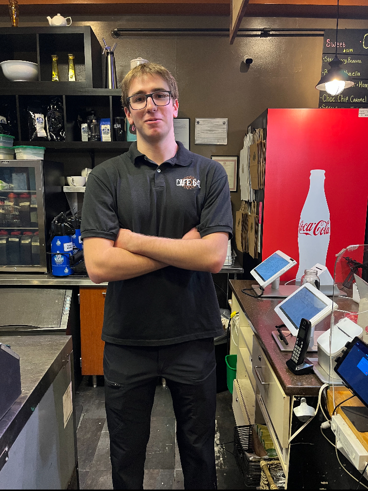
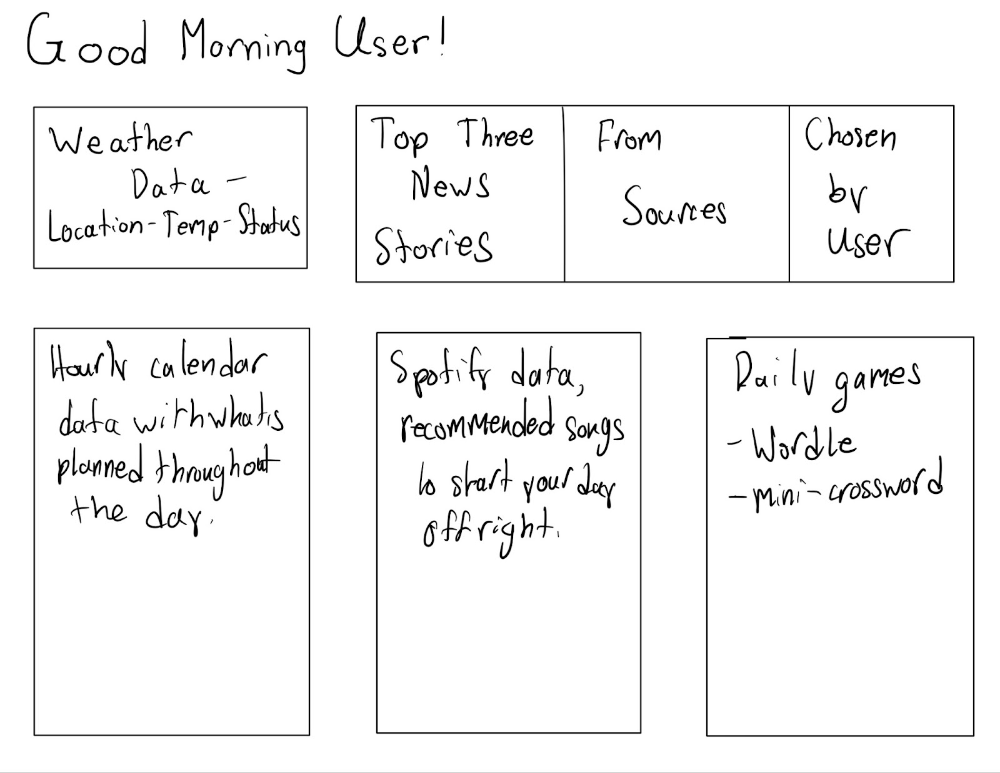
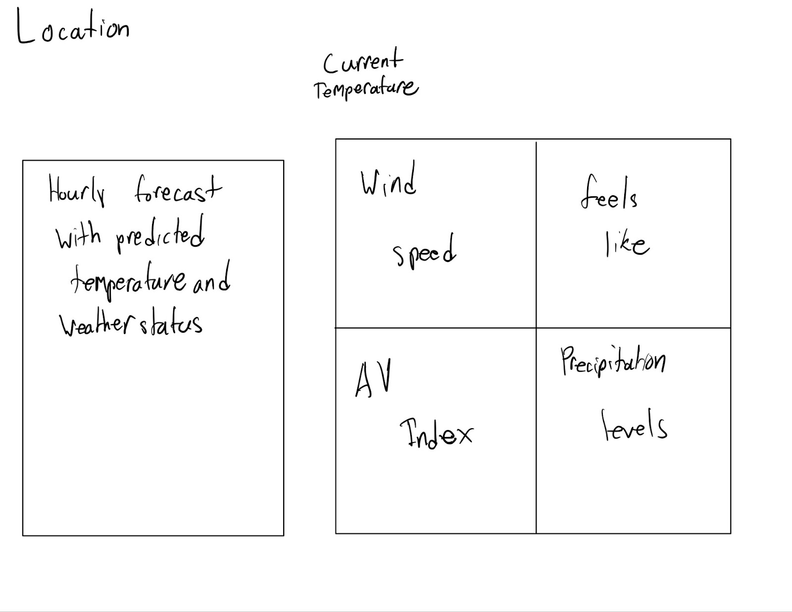
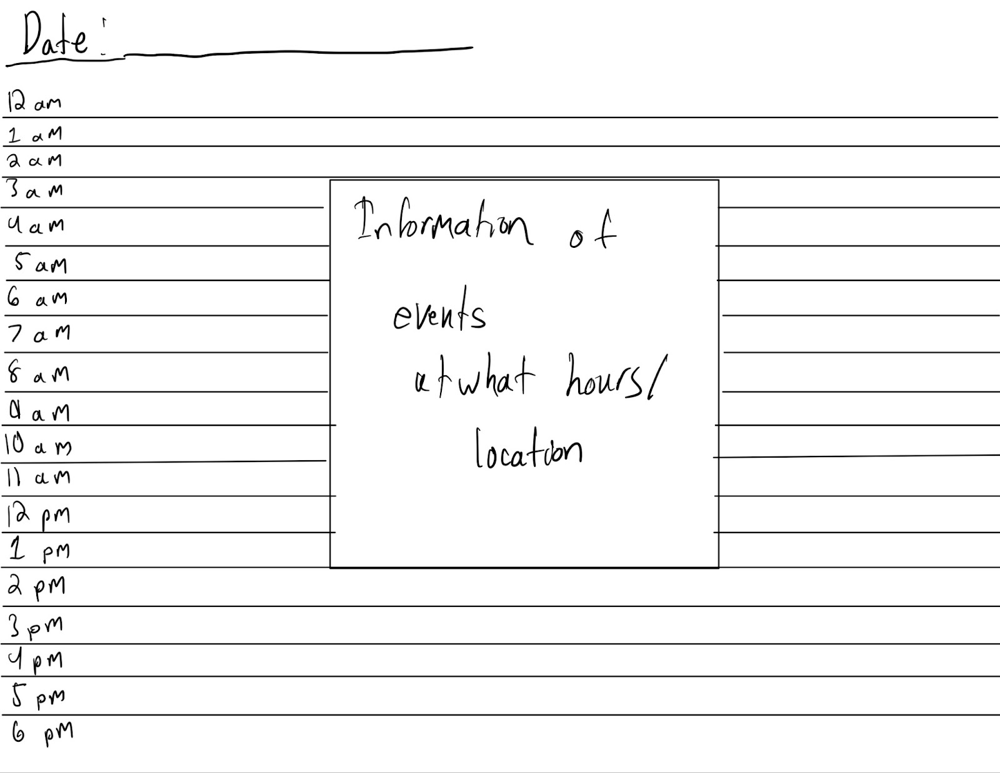

Team:
Jake Reid
Role: Project Manager
Robert Kane
Role: Back-End programming

Lindsey Blau
Role: Front-end programming
Daniel Friedman
Role: Documentation Lead
Overview: Rise and Shine!
Application Parts
Data Requirements
Location Data - dependent on user permission
Weather Data - ties to location
News Data
Spotify Data - permission
Calendar Data - import
User Profiles- name, login/password(?), location
Game API - crossword and wordle
Through Rise and Shine users will establish an organized and simple morning routine, eliminating the need to switch between applications. By providing all the information needed for a well informed start to the day our application acts as a hub for personal organization and planning. Our user’s profile provides the base data required to kickstart their morning routine. Upon the initial opening of Rise and Shine users will be prompted to provide a username, password, static “home” location, name, and date of birth. This data will be used to provide a friendly and inviting user interface, greeting the user by name and providing information about local weather and attractions. Another key data element that Rise and Shine relies upon to enhance the user experience is location data. This data will be used to fetch weather information based on the current location of the user, rather than the “home” location provided upon account creation. Location services will be enabled upon explicit user acceptance, and can then accurately provide information about weather and attractions in the local area. We will use data from outside API sources. This will include a News API, to provide users with top informational headlines, and a Game API, such as the New York Times’s Wordle and Daily Mini, to provide users with entertainment options. Integration of the user's Spotify data is another key personalization feature of our application. After receiving permission, users will be able to export their Spotify data, which will be used to pull key statistics from music streaming APIs. This data will be used to offer personalized recommendations, as well as information about the users recent listening habits. Lastly, we will use data from a user's Google Calendar, smoothly importing and integrating this data into our interface. This allows users to meticulously manage their time while viewing other various aspects of the application. Integrating multiple different data sources will provide a comprehensive and user-oriented overview to the application. This process allows for niche user personalization, enhancing the overall user experience.
Wire Frames
Main Page
The framework of Rise and Shine has been designed to feature all of the information offered by our website in a grid-like format. Above all of the information provided to the user is a string accessing the information provided in the User Profile such as their name to present a “Good Morning [User's Name]” message. Under that in our first row is weather data and three featured news stories, under which is a preview to your calendar, frequently played spotify songs, if your spotify account is linked, and daily free games such as Wordle and the mini-crossword. Each of these boxes are simply previews, of which the user can click on any one to access more information.
Weather Page

The framework of the weather page would feature the location of the weather showcased in the top left corner, with the current temperature in the top center of the page, featuring an hourly forecast to the left and other important weather information such as wind speed, “feels like” temperatures, the current AV index and precipitation levels.
Calendar
Full page has a much larger view of the schedule for that day, with organized lines going down hourly from 12 am to 11 pm, and all events scheduled are featured within boxes with information that can be added like the location.
News

The larger news page view features more stories, with a featured top story, headlines and little pieces of the beginning of the article filling the space below the headline of each news story.